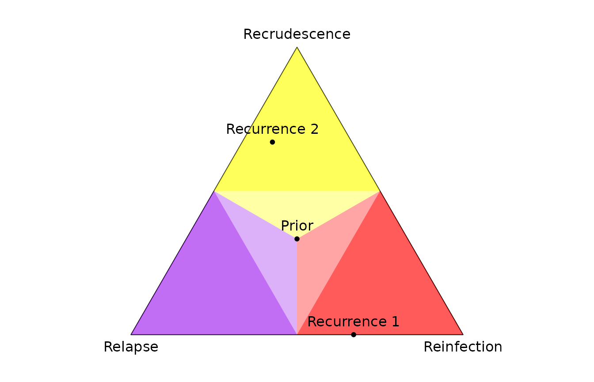

This vignette demonstrates the basic Pv3Rs workflow for
a single study participant:
- Plot data
- Compute recurrence state posterior probabilities
- Plot per-recurrence probabilities
We also show how to explore relationship graphs and their log
likelihoods. For a general understanding of posterior probabilities, see
Understand
posterior probabilities. A tutorial demonstrating the
Pv3Rs workflow at the study-level is planned; we plan to
cover
- Generating pairwise probabilities when the total genotype count over multiple recurrences exceeds eight
- Computing false discovery rates
- Sensitivity analysis for genotyping errors
- Sensitivity analysis for sibling misspecification
- Alternative approach using genetic distance and whole-genome sequence data
- Using posterior probabilities (rather than categorical classifications) in downstream analyses
- Estimating false negative rates
Basic workflow
We begin with a synthetic example of three episodes (episode names
are optional) with three markers (marker names are obligatory) whose
alleles have known frequencies, fs.
y <- list("Enrolment" = list(m1 = c('b','c','d'),
m2 = c('a','b'),
m3 = c('b','c','d')),
"Recurrence 1" = list(m1 = c('b','d'),
m2 = c('a'),
m3 = c('a','b')),
"Recurrence 2" = list(m1 = c('d'),
m2 = c('a'),
m3 = c('a')))
fs <- list(m1 = c(a = 0.27, b = 0.35, c = 0.18, d = 0.20),
m2 = c(a = 0.78, b = 0.14, c = 0.07, d = 0.01),
m3 = c(a = 0.21, b = 0.45, c = 0.26, d = 0.08))1) Plot data
We plot the data using plot_data().

For each marker, different colours represent different alleles. The
legend below the main grid shows per-marker allele frequencies via
colour proportions, with one row per marker, ordered as in the main
grid; e.g., d at m2 is rare.
The most parsimonious MOI estimates compatible with the above data,
3, 2, 1, are computed using determine_MOIs(). The total
genotype count (sum over MOIs) is 6.
Aside In this synthetic example, markers are quart-allelic, imposing low upper bounds on MOI estimates based on maximum per-marker allele counts. More diverse markers are recommended for MOI estimation and recurrence state inference.
2) Compute recurrence state posterior probabilities
The bulk of the computational time lies in computing log-likelihoods
of graphs of relationships between genotypes. The number of graphs
depends on the MOIs. By default, compute_posterior uses MOI
estimates generated by determine_MOIs.
post <- compute_posterior(y, fs)
#> Number of valid relationship graphs (RGs) is 1315
#> =============================================================================|
#> Computing log p(Y|RG) for 1315 RGs
#> =============================================================================|
#> Finding log-likelihood of each vector of recurrence states
#> =============================================================================|Aside We do not recommend running
compute_posterior() for data whose total genotype count
(sum over MOIs) exceeds eight. That said, we have not encoded a hard
limit. In our experience, it is possible, but very long, to generate
posterior probabilities using data with a total genotype count up to 10;
above 10, calls to compute_posterior() are liable cause
memory-use problems and fail.
In the call to compute_posterior() above we did not
specify a prior, and so by default all three recurrence states were
assumed equally likely per recurrence.
Posterior probabilities of recurrent state sequences (where
C is recrudescence, L is relapse, and
I is reinfection) are stored in post$joint.
Here, we find the most likely sequence of recurrence states is IC with
posterior probability 0.4568:
sort(post$joint, decreasing = T)
#> IC LC IL LL II LI CC
#> 0.45682305 0.21338194 0.15385932 0.08501504 0.05986209 0.03105856 0.00000000
#> CL CI
#> 0.00000000 0.00000000Per-recurrence posterior probabilities of recrudescence
C, relapse L, and reinfection I
are stored in post$marg.
post$marg
#> C L I
#> Recurrence 1 0.000000 0.3294555 0.67054446
#> Recurrence 2 0.670205 0.2388744 0.09092065We refer to per-recurrence probabilities as marg
(shorthand for marginal) because they are computed by simply summing
over state sequence probabilities. For example, the probability of
L at Recurrence 1 above is the sum of
probabilities over LC, LL and
LI:
post$joint["LC"] + post$joint["LL"] + post$joint["LI"]
#> LC
#> 0.32945553) Plot per-recurrence probabilities
Per-recurrence posterior probabilities are plotted on the simplex
using plot_simplex().
oldpar <- par(no.readonly = TRUE)
par(mar = c(0,0,0,0))
plot_simplex(p.coords = rbind(post$marg, Prior = rep(1/3, 3)), pch = 20)
par(oldpar)The point in the yellow region is most likely a recrudescence with posterior probability greater than 0.5 (it falls in the bright yellow region); the point in the red region is most likely a reinfection with posterior probability greater than 0.5 (it falls in the bright red region).
Exploration of relationship graphs
To explore relationship graphs (RGs) and their log-likelihoods, set
return.RG and return.logp to
TRUE.
post <- compute_posterior(y, fs, return.RG = TRUE, return.logp = TRUE)
#> Number of valid relationship graphs (RGs) is 1315
#> =============================================================================|
#> Computing log p(Y|RG) for 1315 RGs
#> =============================================================================|
#> Finding log-likelihood of each vector of recurrence states
#> =============================================================================|We recover the same posterior as before.
sort(post$joint, decreasing = T)
#> IC LC IL LL II LI CC
#> 0.45682305 0.21338194 0.15385932 0.08501504 0.05986209 0.03105856 0.00000000
#> CL CI
#> 0.00000000 0.00000000But the compute time was longer: to compute the posterior, summations
over per-marker allelic assignments that are equivalent up to
within-episode genotype permutations are redundant. As such, by default,
compute_posterior() does not sum over them, conserving both
memory and compute time. The exploitation of permutation symmetry
requires a scheme to choose a single representative among permutations
that are otherwise equivalent. To compute meaningful graph likelihood
values (values that do not depend on the representative-choosing
scheme), all permutations are summed over when
return.logp = TRUE, increasing compute time, especially
when MOIs are large. Also, when user-specified MOIs exceed those of
determine_MOIs(), all permutations are summed over because
the representative-choosing scheme is too complicated.
The log-likelihood of each relationship graph is returned. We plot the relationship graph(s) with the largest likelihood. In this example, there are two graphs with maximum likelihood; they are isomorphic up to within-episode genotype permutations.
# Extract all log likelihoods
llikes <- sapply(post$RGs, function(RG) RG$logp)
# Get maximum log likelihood
mllikes <- max(llikes)
# Extract the relationship graphs (RGs) with the maximum log likelihood
RGs <- post$RGs[which(abs(llikes - mllikes) < .Machine$double.eps^0.5)]
# Plot RGs with maximum log likelihoods
oldpar <- par(no.readonly = TRUE) # Store user's options
par(mar = rep(0.1,4), mfrow = c(1,2))
for(i in 1:length(RGs)) {
plot_RG(RG_to_igraph(RGs[[i]], determine_MOIs(y)), vertex.size = 20)
box()
}
# Add a legend
legend("bottomright", pch = 21,
pt.bg = RColorBrewer::brewer.pal(n = 8, "Set2") [1:length(y)],
bty = "n", legend = names(y), title = "Episode")
par(oldpar) # Restore user's optionsUsing log likelihoods, we can also find the equivalence class for which the data are most probable when all relationship graphs in that class are summed over.
# In the following code, we place two graphs in the same equivalence class if
# they share the same likelihood. This is not ideal (two graphs that are not
# isomorphic up to permutation could share the same likelihood), but it works
# here: the plot shows only isomorphic graphs within the equivalence class.
sorted_llikes <- sort(llikes, decreasing = T) # Sort log likelihoods
adj_equal <- abs(diff(sorted_llikes, lag = 1)) < .Machine$double.eps^0.5 # Find matches
decr_idxs <- which(adj_equal == FALSE) # Change points: 2, 8, 14, 20, 32, ...
class_sizes <- c(decr_idxs[1], diff(decr_idxs)) # Number of graphs per class
# log likelihood of representative from each 'equivalence class' (EC)
llikes_unique <- sorted_llikes[decr_idxs]
# EC likelihood
class_ps <- exp(llikes_unique)*class_sizes
max_class_p <- which(class_ps == max(class_ps)) # ML EC index
max_idx <- decr_idxs[max_class_p] # Index of last graph in ML EC
max_size <- class_sizes[max_class_p] # Number of graphs in ML EC
# Plot all graphs within the ML EC
oldpar <- par(no.readonly = TRUE) # Store user's options
par(mar = rep(0.1,4), mfrow = c(3,4))
RG_order <- order(llikes, decreasing = T) # order RGs by logl
for(i in (max_idx-max_size+1):max_idx) { # EC consists of the RGs with logl rank 21-32
RG <- post$RGs[[RG_order[i]]]
RG_igraph <- RG_to_igraph(RG, determine_MOIs(y))
plot_RG(RG_igraph, vertex.size = 25, vertex.label = NA)
box()
}
par(oldpar) # Restore user's optionsImportant considerations
The maximum-likelihood graph(s) might not be in the equivalence class for which the data are most probable when all relationship graphs in that class are summed over (true of the above example).
The maximum-likelihood graph(s) might be incompatible with the maximum-posterior state sequence, (not true of the above example; recall the most-likely sequence was IC).
The graphs in the maximum-likelihood equivalence class might be incompatible with the maximum-posterior state sequence (true of the above example; the class with the largest likelihood contains graphs with sibling edges that are incompatible with IC).